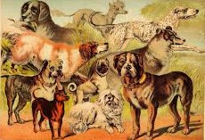

Hoe honden rassen ontstaan
Een hondenras ontstaat doordat mensen selectief op deze kenmerken fokken. Er zijn wel meer dan 300 verschillende hondenrassen.
Selectie op eigenschappen
Oorspronkelijk werden honden vooral geselecteerd op het vermogen om bepaalde taken uit te voeren, zoals het hoeden van vee, het assisteren bij de jacht en de bewaking van huis en erf. Daarbij werd gelet op zowel mentale als fysieke eigenschappen, maar vooral op het eerste. Zo is een sterke jachtdrift belangrijk voor een jachthond, maar hetzelfde gedrag is voor een waakhond juist ongewenst. Alleen in bijzondere gevallen, zoals bij trekhonden of poolhonden, werden ook hoge eisen aan de bouw en de vacht gesteld. Verder is één bepaalde groep honden, traditioneel aangeduid als schoothondjes, altijd al als gezelschapsdier gefokt.
Door de nadruk op het werkvermogen laten de traditionele rassen een grote mate van variabiliteit in het uiterlijk zien. Oude rassen worden daarom ook wel aangeduid als een slag of een type. Vanaf de 19e eeuw ontstond er steeds meer belangstelling voor het uiterlijk van de honden. Eerst werden enkele, later steeds meer, rassen erkend. Dat leidde ertoe dat de eigenschappen werden beschreven in een rasstandaard en de afkomst van de rashonden werd geregistreerd in een stamboek. Men begon gericht te fokken op eenheid in exterieur en vaste vererving. Dat wil zeggen dat twee honden van hetzelfde ras uitsluitend jongen krijgen met hetzelfde uiterlijk als de ouders.
Van veel rassen wordt verondersteld dat ze zeer oud zijn, maar men moet zich wel realiseren dat ze doorgaans niet al te lang geleden bij de aanleg van het stamboek uit slechts enkele individuen gefokt zijn. Daarnaast zijn er echt nieuwe creaties, raszuiver uitgefokte kruisingen, zoals de dobermann.
Erkenning als ras
In 2016 waren er meer dan 330 hondenrassen door een kennelclub 'erkend'. In Nederland en België is de indeling van de internationale federatie van kennelclubs, de FCI (Fédération Cynologique Internationale) toonaangevend, maar met name in Groot-Brittannië (The Kennel Club), de Verenigde Staten (American Kennel Club) en een groot deel van de rest van de wereld worden andere rasindelingen gebruikt. Het aantal erkende rassen groeit continu. Als een ras niet door een of meerdere internationale overkoepelende organisaties is erkend, wil dat niet zeggen dat er daarom geen sprake is van een ras. Wel heeft dat tot gevolg dat honden van zo'n ras niet kunnen deelnemen aan kampioenswedstrijden die georganiseerd worden door een organisatie die het ras niet erkent.
Wist je dat?
De chochow wordt beschouwt als
het oudste honden ras ter wereld!
Variëteiten
Rassen worden soms weer onderverdeeld in variëteiten. Bij de FCI is in feite de variëteitsgroep minstens zo belangrijk als het ras zelf, want er wordt alleen met honden uit dezelfde variëteitsgroep gefokt. Zo valt het ras Hollandse herder uiteen in de variëteitsgroepen korthaar, langhaar en ruwhaar, die niet onderling gekruist mogen worden.
Fokkers zijn vaak voorstander van een steeds verdere opsplitsing van rassen. Dat heeft een technische reden: het zuiver fokken van de per ras vastgestelde eigenschappen. Maar het heeft ook te maken met het feit dat kampioenschapsprijzen per variëteitsgroep beschikbaar gesteld worden: meer groepen, meer prijzen. De steeds verdergaande opsplitsing van soms toch al kleine populaties verergert echter het probleem van inteelt.
bron: wikipedia.nl